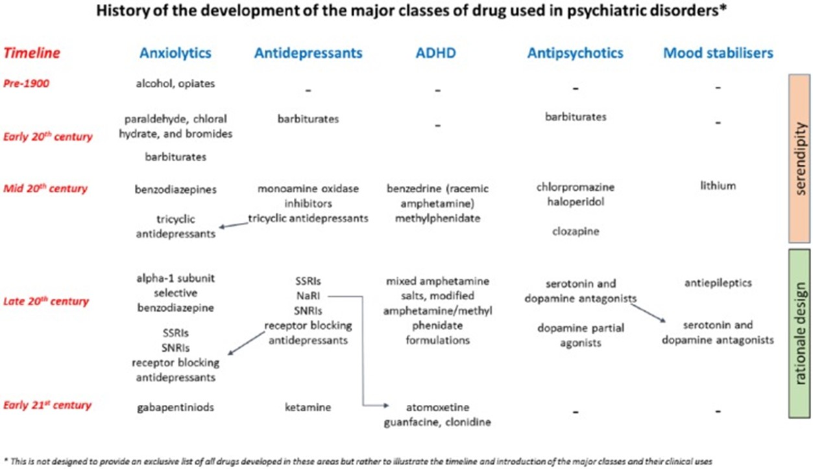
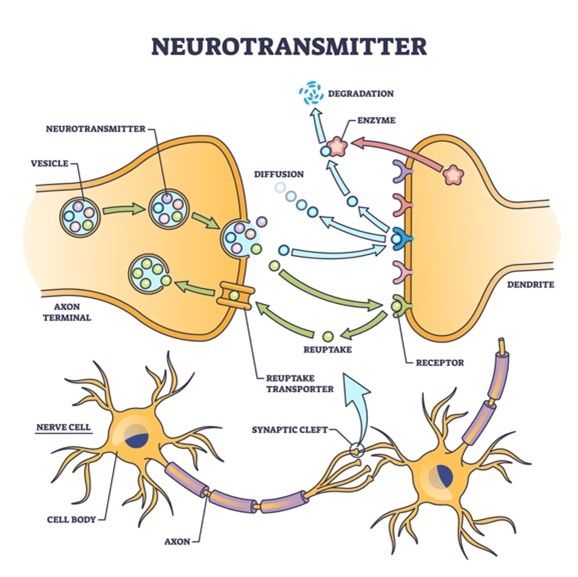
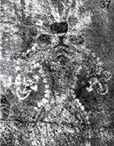
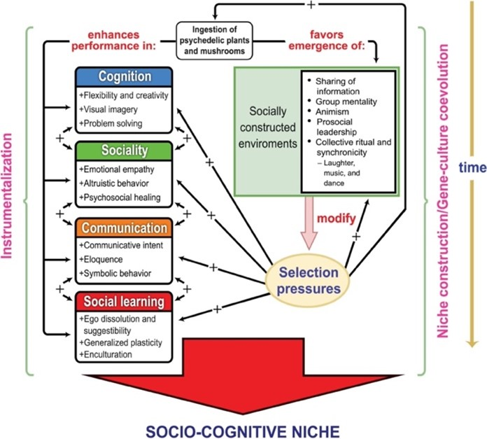

Cognitive Elixirs: Unraveling the Reality of Neuroactive Compounds#
By Isaiah Moonlight
1.1 Introduction: Everyday Drugs#
Everyday millions of people around the world use neuroactive drugs, many of them never aware of what they are doing. Ever drank a cup of coffee to keep you alert? Taken an Ibuprofen to help with a headache? Or a melatonin to help you sleep? If you have, you’ve been taking neuroactive drugs. Neuroactive drugs are all around us! Any substance that affects the functioning of the nervous system is considered a neuroactive drug. In this chapter we are going to take a dive into the vast field of psychopharmacology, the study of neuroactive drugs and their various physical and mental effects. Special focus will be given towards the ways in which neuroactive drugs interact with the brains ability to require and change over time, neural plasticity.
We will embark on an exploration of psychopharmacology, delving into its evolution from historical and cultural perspectives, and highlighting pivotal breakthroughs in medical and scientific realms. Next, we will develop a foundational understanding of neurotransmitters and the innate cellular mechanisms that neuroactive drugs manipulate. We will conclude by examining each of the major neuroactive drug categories and discussing their broad applications, their specific effect on brain plasticity, and the ethical considerations surrounding each. Thus, without further delay, let us immerse ourselves in the captivating realm of psychopharmacology and its profound influence on neural plasticity!
1.2 A Brief History of Psychopharmacology: Medicine and the Brain#
Neuroactive drugs, in one form or the other, have been a part of human history for thousands of years. Grecian and east-Asian physicians as well as indigenous spiritual leaders used natural brain-altering substances for their mind altering or sedating effects (Jean-Gaël, 2014). In the 18th century, neuroactive substances were manufactured into tinctures and tonics and used liberally by physicians to “treat” and subdue patients in asylums and hospitals (Braslow & Marder, 2019). These early medicines included things like laudanum, opium and alcohol used for treating pains and aches, and ‘Pemberton’s tonic’, the first frorm of Coca-Cola which contained cocaine and was sold as a ‘cure all’ until it was later remarketed (Smallwood, 2018). Physicians continued to experiment and look for more effective drugs throughout the nineteenth century, ultimately culminating in the birth of modern psychopharmacology in the early 1950’s with the artificial synthesis of chlorpromazine and clozapine (Braslow & Marder, 2019).
 Figure 1: Brief overview of the history of clinical drug development
Modern psychopharmacology coincided with the development of neuroscience as a field of study. Early drugs like chlorpromazine and clozapine were groundbreaking drugs that were prescribed to psychiatric patients as a sedative, but free from the type of negative side effects, like dyskinesia, associated with early neuroactive drugs (Braslow & Marder, 2019). The development of chlorpromazine and clozapine coincided with the growth of neuroscience as a scientific field. Clozapine was the first of many synthesized drugs marketed as an antipsychotic, and one of the first that came free of dyskinesia and Parkinson-like side effects (Braslow & Marder, 2019). As more synthetic neuroactive drugs were created, our comprehension regarding their interactions with the brain and nervous system expanded, paving the way for further development and application in treating various neurological disorders.
Nowadays, psychopharmacology has expanded into one of the biggest and fasted growing medical industries. New medicines to address various neurological conditions, mood disorders, and even help slow neurodegenerative diseases. As you progress through this chapter, it is important to keep in mind the relative recency of these discoveries. While the psychopharmacological boom has certainly been a boon for thousands, helping to address previously untreatable issues, it has also happened so quickly that now research is running to catch up. We still are not fully aware of the long-term effects some medicines might have. The question to ask then is, how do neuroactive drugs really work? To answer that we must first understand how our brain naturally communicates. We must understand neurotransmitters.
1.3 Mechanisms of Action: Neurotransmitters and the Brain#
Neurotransmitters, put most simply, are chemical messengers between neurons and cells in the brain that help to facilitate the transmitting of signals between neurons and throughout the body.
 Figure 2: Basic neurotransmitter diagram
Neurotransmitters are broadly categorized as either excitatory or inhibitory. In other words, they either help to illicit a neurons response, exciting it and making it fire, or suppressing it and inhibiting its signal (Cleveland Clinic, 2022). Major inhibitory neurotransmitters include GABA, a universal inhibitor, and acetylcholine, often associated with learning and muscle activation. Major excitatory neurotransmitters include Glutamate, a universal excitor, serotonin, associated with mood and sleep, and adrenaline/norepinephrine, which are both tied to alertness and the ‘fight or flight’ response. Some neurotransmitters, like dopamine a G-Protein Coupled neurotransmitter, falls outside either classification. Dopamine is associated with reward pathways, pleasure, and endorphins (Guy-Evans & Mcleod, 2023).
Neuroactive drugs, generally speaking, utilized the natural mechanisms of the brain to change its function. Synthetic drugs work by either mimicking, facilitating, or inhibiting the function of various neurotransmitters. This subsequently alters the way the brain is functioning, ideally producing the desired effect or treatment. Take, for instance, coffee which contains caffeine, a neuroactive stimulant. Caffeine works by increasing the number of excitatory neurotransmitters, like dopamine and norepinephrine, producing its trademark feeling of alertness. Thus, neuroactive drugs essentially function as moderators of communication in the brain.
Neuroactive drugs are great for treating certain neurological conditions by virtue of the way they provide direct assistance to the brain. Take, for instance, a patient with chronic depression who has low levels of serotonin and struggles with maintaining mood. They might receive a form of Selective Serotonin Reuptake Inhibitor (SSRI) that blocks reuptake channels and keeps serotonin the interneuron space longer so more of it can get transmitted.
While neuroscience and psychopharmacology has certainly come a long way, there is much more to understand about neuroactive drugs and their lasting effects on neural plasticity.
Note
1.4 The Role of Psychedelics in Facilitating Neuroplasticity – A Theory
Approximately 200 thousand years ago, a remarkable transformation unfolded in the early history of Homo sapiens. Preceding the migration of our early ancestors from Africa and their subsequent global dispersion, they underwent a significant ‘neural explosion.’ This transformation equipped them with larger brains, rudimentary language, ideas of society, even art, empowering our ancestors to traverse and gradually populate the globe.
 Figure 3: Cave painting depicting mushroom-like images.
While earlier hominin species had ventured out from Africa, evolving into their own species and lineages, they all eventually died off – leaving homo sapiens as the lone survivor of an otherwise massive radiation event. The question of what made humans different has long been of scientific interest. Psychedelics might just hold the answer.
In a recent paper, theorists propose that early hominins’ exposure to psychedelics, such as psilocybin found in mushrooms, might have exerted evolutionary pressures necessary for our rapid advancements.
The theory goes like this: early humans encountered psychedelic compounds due to their reliance on foraging. The feces of various animals provided an ideal breeding ground for mushrooms containing psilocybin. Psilocybin’s profound effects on the brain—from reopening critical periods to augmenting feelings of empathy—have been well-documented. The integration of psychedelics into the dietary and ritual practices of early humans could have provided selective advantages by enhancing social behaviors like empathy, provided greater adaptability, and collective decision-making. Subsequently, additional evolutionary mechanisms, such as sexual selection, only helped to exacerbate these effects. As humans selected for intelligence and sociability, these traits became more pronounced and refined.
 Figure 4: Evolutionary model for the generational effects of psychedelic use by early humans
While aspects of this theory remain unknowable, anthropological evidence establishes compelling links between humans and early utilization of psychedelics. This sheds light on the broader role that neuroactive drugs might have played in shaping human history.
Indeed, psychedelics like psilocybin may have contributed to forging the human socio-cognitive niche, facilitating the expansion of social bonding mechanisms and expediting the proliferation of social, cognitive, and communicative skills within our lineage. What could be more quintessentially human than that?
1.5 Neuroactive Drugs: Types and Effects#
Neuroactive drugs are typically categorized by their overall effects on the brain and the neurotransmitters they most often interact with. The major categories include stimulants, depressants, psychedelics or hallucinogens, and analgesics and anesthetics or opioids (Peckham & Fletcher, 2023. Enevoldson, 2004). We will take a closer look at each through examples and examine the effects they might have on brain plasticity.
Stimulants: Coffee, Cocaine, and Amphetamines#
Stimulant neuroactive drugs are known to increase the release of certain neurotransmitters, such as dopamine and norepinephrine, and enhance activity in areas of the brain associated with attention and alertness. Coffee, a common everyday stimulant, contains caffeine, which activates noradrenaline neuron signaling and helps with the release of dopamine neurons, producing a motivated and focused state (Nehlig et al., 1992).
Other stimulants, including illicit drugs like cocaine, function on a similar principle. By overstimulating the already present dopamine reward pathways and inhibiting dopamine reuptake, cocaine and other illicit drugs produce a hyper-focused euphoric state (NIDA, 2020).
Stimulants are one of the largest fields of neuroactive drugs. Medically they are prescribed in the form of SSRI’s and amphetamines in order to treat conditions like depression and attention deficit disorders (ADHD/ADD). One of the many questions remaining when it comes to the long-term use of stimulants is their ultimate effects on brain plasticity. In the short term, stimulants modulate the levels of neurotransmitters in the brain. Over time, the brain will become tolerant, in other words developing a natural resistance to the drug. This indicates that on some level the brain changes and adapts to the new levels of neurotransmitters. However, some research indicates that long term antidepressant (AD) use has been associated with neurogenesis, synapse formation, and increased cell survival in prefrontal and hippocampal regions of patients treated with AD’s (Serafini, 2012). What could be behind these long-term changes in brain plasticity? Glutamate! Research has indicated that the long-term interaction between glutamate and dopamine in particular pathways, altered by consistence use of a prescribed psychostimulant, is responsible for much of the observed neuron and synaptic changes (Wang & McGinty, 2006).
It seems that when people are in need of AD’s or other stimulants, they could experience lasting structural changes in the brain due to use. A wellspring for curious researchers. However, when not used as a treatment, abused as in illicit drug use, the overuse and can result in neurological changes associated with addiction. Because of their high addiction rate and desirable effects, most stimulants are controlled substances. Only prescribed if, and when, needed.
Depressants: Melatonin, Alcohol, and Heroin#
Depressants, in contrast to stimulants, have a calming and slowing effect on the body and brain. They increase the production of inhibitory neurotransmitters in the brain, specifically GABA, which inhibits and slows signals between the brain and the body (NIDA, 2018). This inhibition is responsible for most of the effects associated with depressants, including sleepiness, dizziness, and disconnection from the body. Benzodiazepines, barbiturates, and sedatives are all different types of depressants.
Melatonin and alcohol are some of the most common depressants. Melatonin tablets help people sleep by providing an extra boost of melatonin, the brain’s natural “sleepy” chemical. Alcohol produces dizziness, confusion, and eventually drowsiness. While there is not association between melatonin use and neuroplastic changes, alcohol use, especially excessively, can cause many undesirable changes to the brain. Notably, excessive use has been shown to change synaptic transmission in the striatum and stria terminalis that subsequently reduce inhibition and increase addiction and chance of relapse (Lovinger & Kash, 2015). When consumed to young, or when consumed pre-natal, alcohol is known to reduce brain size and density resulting in fetal alcohol syndrome. It’s shown to interfere with hippocampal synaptic activity, leading to effects on learning and memory (Fontaine et al., 2016).
When prescribed as a treatment, depressants can be beneficial in assisting with sleep, mood and muscular disorders. By inhibiting synaptic activity, they can help to decrease undesirable or involuntary action and calm down overexcited neurons. Depressants are frequently prescribed to treat anxiety, which is often the result of overactivity in the amygdala – classically thought of as the ‘fear processing center’. This heightened activity leads to an excessive production of stress-related hormones and neurotransmitters such as cortisol. Prolonged periods of stress and anxiety have been linked to an increased susceptibility to psychiatric disorders like dementia, depression, or post-traumatic stress disorder (PTSD). This connection likely stems from the consequential reduction in functionality observed in key regions of the brain, namely the hippocampus and the prefrontal cortex (PFC) (Mah et al., 2015). Specific alterations in the amygdala and the PFC, regions integral to fear processing and behavioral regulation, have been observed in patients with anxiety and those under excessive stress. Persistent stress can even disrupt neural circuitry, creating imbalances that diminish the brain’s structural adaptability associated with decision-making, memory, and cognitive processes (McEwen et al., 2012). When properly prescribed, the use of anxiety medication depressants can mitigate and potentially reverse many of the adverse effects induced by continual exposure to stress. While these changes are contingent, individuals undergoing anxiety treatment with medication benefit from preservation and rescuing of otherwise deteriorating regions, thanks the natural plasticity of the brain and aided by the skillful application of neuroactive drugs.
Hallucinogens and Psychedelics: Psylocibin and LSD#
Hallucinogens represent a distinctive class of neuroactive drugs with untapped potential. All hallucinogens exert their effects by stimulating a specific serotonin receptor in neurons, thereby inducing alterations in oscillation patterns within specific brain regions and throughout the entire brain (Carhart-Harris et al., 2014). In other words, they disrupt the preexisting rhythmic activity. The diverse range of experiences attributed to hallucinogens stems from their distinct chemical compositions. These substances are recognized for their capacity to induce both physical and perceptual changes, including the distortion of individuals’ perceptions of time, space, and self. While hallucinogens are not prescribed presently, they have been utilized by various cultures for spiritual, cultural, and medicinal purposes.
Hallucinogens have emerged as an increasingly intriguing area within psychopharmaceutical research due to their profound impact on neural plasticity, surpassing that of other neuroactive substances. Recent studies have unveiled promising preliminary findings. Controlled utilization of specific hallucinogens in therapeutic settings has exhibited potential in assisting in the treatment of otherwise treatment resistant psychiatric disorders (Santos & Hallak, 2019). Furthermore, controlled use has been associated with modulating fear related neural networks, facilitating pathways for fear extinction in the treatment of anxiety and PTSD (Glavonic et al., 2021). It has even shown potential as an antidepressant (Kim et al., 2020).
The enduring therapeutic effects attributed to hallucinogens are closely linked to their capacity to induce structural and functional changes in neural plasticity (Baumeister et al., 2014). The use of Psilocybin, a standard hallucinogenic, has been shown to cause an average 10% increase in dendritic spine size and density lasting over a month (Shao et al., 2021). This sort of growth is associated with an increase in LTP strength, heightened learning, and lasting neuroplastic changes. Although much about their mechanisms remains enigmatic, the study of hallucinogens continues to be an increasingly captivating field of research.
Analgesics and Anesthetics: Tylenol, Anesthesia, and Morphine#
Analgesics and anesthetics are primarily recognized for their efficacy in pain management within the body. This class of medications, designed for pain relief and sedation, intervene in the transmission of pain signals within the brain. In the case of common pain relievers like Tylenol, the chemical acetaminophen is believed to impede enzyme production in neurons, thereby halting the propagation of pain signals and diminishing the sensation of pain (Shaughnessy, 2022).
Conversely, more potent sedatives such as anesthesia induce a comprehensive alteration in the brain’s oscillation patterns, effectively severing communication among various brain regions and inducing a state of profound unconsciousness (Ruder, 2019). Often described as a temporary coma, by interrupting the brains preestablished and natural signaling frequency, it prevents bodily signals from being interpreted by the brain.
Current research has not yet extensively explored the potential neuroplastic changes induced by analgesics and anesthetics. However, there is a recognized risk of addiction. Due to the way they rescue patients from pain, the brain can become dependent and crave the relieving effects. When the brain physically changes as a result of addiction, it represents a potentially harmful neuroplastic change. There also exists substantial overlap between the analgesic and depressive drug categories. As such, further investigations are necessary to comprehensively understand the impact of anesthetics and analgesics on neural plasticity.
1.6 Chapter Conclusion and Summery#
The field of psychopharmaceuticals is everchanging as our understanding of the brain grows. It is a fascinating area for potential neuroplastic research, especially because of how directly neuroactive drugs modulate brain activity. Now that you have completed this chapter, you should be better equipped to understand the way neuroactive drugs work in the brain, as well as how they can be used to induce changes in the brain.
1.7 End of Chapter Quiz: Test Your Knowledge!#
What is neuroplasticity, as discussed in this chapter.
A. The brain’s inability to adapt to new experiences.
B. The brain’s capacity to rewire and change over time.
C. A condition that impairs cognitive function
D. A synonym for neurotoxicity
Which neurotransmitter system is most commonly associated with stimulant drugs?
A. Serotonin
B. GABA
C. Dopamine
D. Glutamate
E. Norepinephrine
F. A and B
G. C and E
H. None of the above
Substances like alcohol, benzodiazepines, and Barbiturates fall into which category of neuroactive drugs?
A. Stimulants
B. Depressants
C. Hallucinogens
D. Analgesics
Which neurotransmitter system is primarily affected by hallucinogens like LSD and psilocybin?
A. Dopamine
B. GABA
C. Serotonin
D. Glutamate
Which of the following is NOT discussed as a potential application of neuroactive drugs in this chapter?
A. Enhancing cognitive performance
B. Treating mental health disorders
C. Inducing sleep
D. Enhancing physical endurance
What are some of the ethical considerations discussed in this chapter regarding the use of neuroactive drugs?
A. Safety, regulation, and accessibility
B. The promotion of recreational drug use
C. Ethical considerations are not discussed in the chapter.
D. The need for greater restrictions on research
What are the potential benefits of using neuroactive drugs in the treatment of mental health disorders?
A. They have no therapeutic value.
B. They can provide temporary relief, but no long-term benefits.
C. They may facilitate profound insights and long-lasting improvements in mental health.
D. They are only effective for physical health issues.
Based on the chapter, or your own experiences, what are the major benefits and drawbacks of using neuroactive drugs in the long term? Does it matter if they are for recreational or personal use?
What is the primary impact of analgesics and anesthetics on the brain?
A. Enhancing memory formation.
B. Inducing temporary alterations in perception.
C. Inducing pain relief and sedation.
D. Suppressing neurotransmitter activity.
What major theory about human evolution is discussed in this chapter and what support does it have?
A. Hallucinogenic were used by early humans and lead to the development of the human brain. Supported by knowledge about the role of hallucinogenic on the brain (i.e., reopening critical periods)
B. Stimulants, like coffee, have caused humans to have overall longer attention spans and allowed for increased learning periods.
C. Neuroactive drugs have not affected human evolution.
D. Other factors, like the taming of fire, lead to neuroplastic changes and subsequently human evolution.
Answers#
B.
G.
B.
C.
D.
A.
C.
Benefits are only present when helping treat patients and return them to baseline. Recreation use can easily lead to misuse and which can negatively affect neural plasticity.
C.
A.
References#
Braslow, J. T., & Marder, S. R. (2020, June 10). History of psychopharmacology. Annual Review of Clinical Psychology. https://escholarship.org/uc/item/5qp5h8qs
Baumeister, D., Barnes, G., Giaroli, G., & Tracy, D. (2014). Classical hallucinogens as antidepressants? A review of pharmacodynamics and putative clinical roles. Therapeutic Advances in Psychopharmacology, 4, 156 - 169. https://doi.org/10.1177/2045125314527985.
Carhart-Harris, R., Kaelen, M., & Nutt, D. (2014, September 14). How do hallucinogens work on the brain?. BPS . https://www.bps.org.uk/psychologist/how-do-hallucinogens-work-brain
Cleveland Clinic. (2022, March 14). Neurotransmitters: What they are, functions & types. https://my.clevelandclinic.org/health/articles/22513-neurotransmitters
Enevoldson, T. P. (2004, September 1). Recreational Drugs and their neurological consequences. Journal of Neurology, Neurosurgery & Psychiatry. https://jnnp.bmj.com/content/75/suppl_3/iii9.info
Fontaine, C. J., Patten, A. R., Sickmann, H. M., Helfer, J. L., & Christie, B. R. (2016). Effects of pre-natal alcohol exposure on hippocampal synaptic plasticity: Sex, age and methodological considerations. Neuroscience & Biobehavioral Reviews, 64, 12–34. https://doi.org/10.1016/j.neubiorev.2016.02.014
Glavonic, E., Mitić, M., & Adzic, M. (2021). Hallucinogenic drugs and their potential for treating fear‐related disorders: Through the lens of fear extinction. Journal of Neuroscience Research, 100, 947 - 969. https://doi.org/10.1002/jnr.25017.
Guy-Evans, O., & Mcleod, S. (2023, September 27). Neurotransmitters: Types, function and examples. Simply Psychology. https://www.simplypsychology.org/neurotransmitter.html
Jean-Gaël Barbara. History of Psychopharmacology: From Functional Restitution to Functional Enhancement. Handbook of Neuroethics, 2014. ffhalshs-03090884f
Kim, K., Che, T., Panova, O., DiBerto, J., Lyu, J., Krumm, B., Wacker, D., Robertson, M., Seven, A., Nichols, D., Shoichet, B., Skiniotis, G., & Roth, B. (2020). Structure of a Hallucinogen-Activated Gq-Coupled 5-HT2A Serotonin Receptor. Cell, 182, 1574-1588.e19. https://doi.org/10.1016/j.cell.2020.08.024.
Lovinger, D. M., & Kash, T. L. (2015). Mechanisms of Neuroplasticity and Ethanol’s Effects on Plasticity in the Striatum and Bed Nucleus of the Stria Terminalis. Alcohol research : current reviews, 37(1), 109–124.
Mah, L., Szabuniewicz, C., & Fiocco, A. J. (2016). Can anxiety damage the brain?. Current opinion in psychiatry, 29(1), 56–63. https://doi.org/10.1097/YCO.0000000000000223
McEwen, B. S., Eiland, L., Hunter, R. G., & Miller, M. M. (2012). Stress and anxiety: Structural plasticity and epigenetic regulation as a consequence of stress. Neuropharmacology, 62(1), 3–12. https://doi.org/10.1016/j.neuropharm.2011.07.014
Nehlig A, Daval JL, Debry G. Caffeine and the central nervous system: mechanisms of action, biochemical, metabolic and psychostimulant effects. Brain Res Brain Res Rev. 1992 May-Aug;17(2):139-70. doi: 10.1016/0165-0173(92)90012-b. PMID: 1356551.
NIDA. 2018, March 6. Prescription CNS Depressants DrugFacts. Retrieved from https://nida.nih.gov/publications/drugfacts/prescription-cns-depressants on 2023, November 24
NIDA. 2020, June 11. How does cocaine produce its effects?. Retrieved from https://nida.nih.gov/publications/research-reports/cocaine/how-does-cocaine-produce-its-effects on 2023, November 24
Peckham, A., & Fletcher, J. (2023, November 15). Types of psychoactive drugs and their effects. Medical News Today. https://www.medicalnewstoday.com/articles/types-of-psychoactive-drugs
Ruder, D. B. (2019). Anesthesia and the brain. Harvard Medical School. https://hms.harvard.edu/news-events/publications-archive/brain/anesthesia-brain#:~:text=patients waken quickly.-,Anesthetic drugs cause brain circuits to change their oscillation patterns,from communicating with each other
Santos, R., & Hallak, J. (2019). Therapeutic use of serotoninergic hallucinogens: a review of the evidence and of the biological and psychological mechanisms.. Neuroscience and biobehavioral reviews. https://doi.org/10.1016/j.neubiorev.2019.12.001. Serafini, G. (2012, June 22). Neuroplasticity and major depression, the role of modern antidepressant drugs. World Journal of Psychiatry. https://www.wjgnet.com/2220-3206/full/v2/i3/49.htm
Shao, L. X., Liao, C., Gregg, I., Davoudian, P. A., Savalia, N. K., Delagarza, K., & Kwan, A. C. (2021). Psilocybin induces rapid and persistent growth of dendritic spines in frontal cortex in vivo. Neuron, 109(16), 2535–2544.e4. https://doi.org/10.1016/j.neuron.2021.06.008
Shaughnessy, A. S. (2022, September 14). How does acetaminophen work?. How Does Acetaminophen Work? | Tufts University School of Medicine. https://medicine.tufts.edu/news-events/news/how-does-acetaminophen-work#:~:text=However%2C acetaminophen might block the,to its pain-relieving abilities
Smallwood, K. (2018, May 3). Pemberton’s tonic. Today I Found Out. https://www.todayifoundout.com/index.php/2018/05/day-may-8th-1886-john-pemberton-sells-first-glass-coca-cola/
Wang, J. Q., & McGinty, J. F. (2006, June 9). Glutamate‐dopamine interactions mediate the … - wiley online library. Wiley Online Library. https://onlinelibrary.wiley.com/doi/pdf/10.1080/13556219971641
Breakout Page References Holze, F., Avedisian, I., Varghese, N., Eckert, A., & Liechti, M. E. (2021, June 30). Role of the 5-HT2A receptor in acute effects of LSD on empathy and circulating oxytocin. Frontiers. https://www.frontiersin.org/articles/10.3389/fphar.2021.711255/full
Lepow, L., Morishita, H., & Yehuda, R. (2021, August 17). Critical period plasticity as a framework for psychedelic-assisted psychotherapy. Frontiers. https://www.frontiersin.org/articles/10.3389/fnins.2021.710004/full
Martin DA, Nichols CD. The Effects of Hallucinogens on Gene Expression. Curr Top Behav Neurosci. 2018;36:137-158. doi: 10.1007/7854_2017_479. PMID: 28677095.
Rodríguez Arce, J. M., & Winkelman, M. J. (2021, September 6). Psychedelics, sociality, and human evolution. Frontiers. https://www.frontiersin.org/articles/10.3389/fpsyg.2021.729425/full
Figure References Fig 1: Guy-Evans, O., & Mcleod, S. (2023, September 27). Neurotransmitters: Types, function and examples. Simply Psychology. https://www.simplypsychology.org/neurotransmitter.html
Fig 2: Cleveland Clinic. (2022, March 14). Neurotransmitters: What they are, functions & types. https://my.clevelandclinic.org/health/articles/22513-neurotransmitters
Fig 3: Cave paintings in Tassili n’Ajjer in Algeria
Fig 4: Rodríguez Arce, J. M., & Winkelman, M. J. (2021, September 6). Psychedelics, sociality, and human evolution. Frontiers. https://www.frontiersin.org/articles/10.3389/fpsyg.2021.729425/full Opening image: https://www.biospace.com/article/opinion-neuroactive-steroids-face-hurdles-on-the-path-to-bigger-markets/